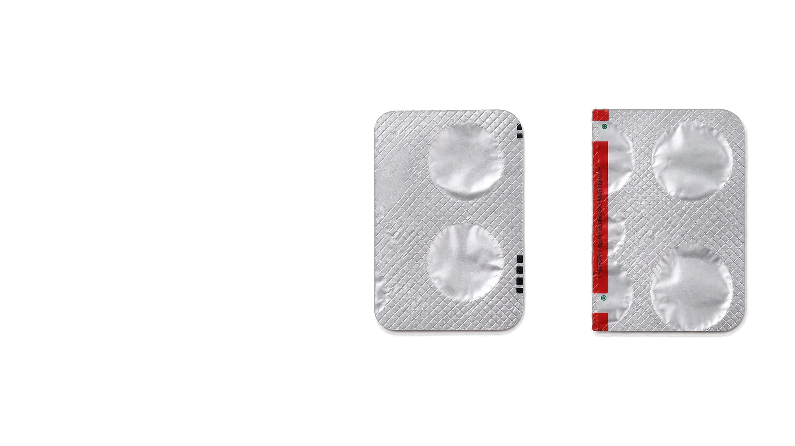
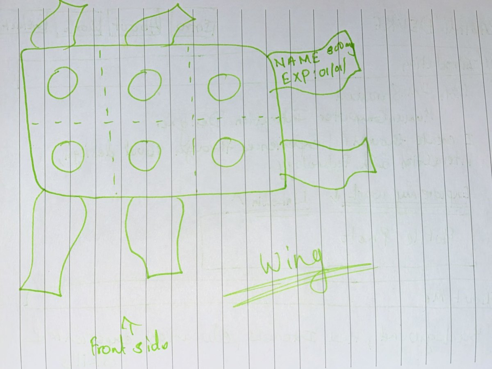
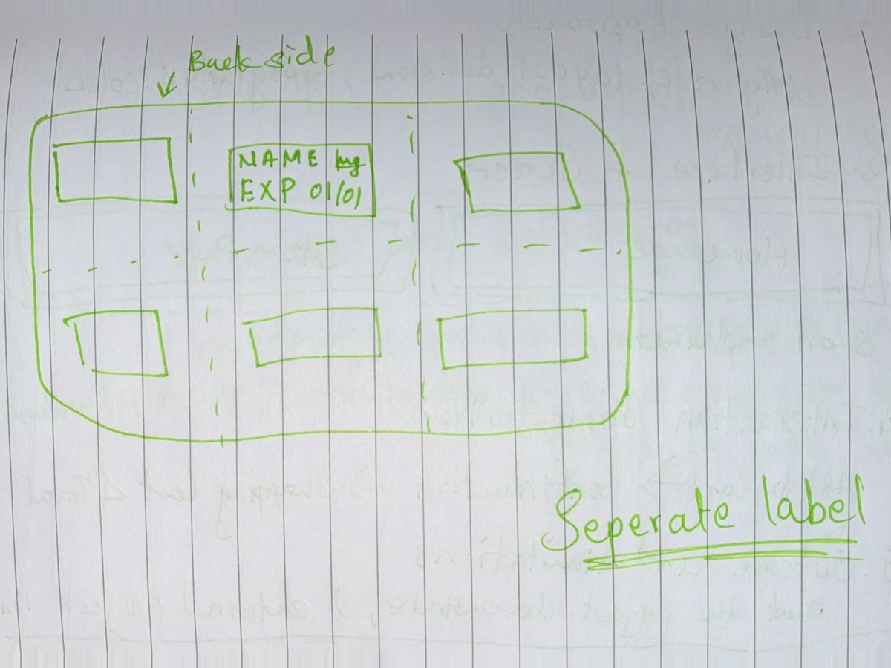
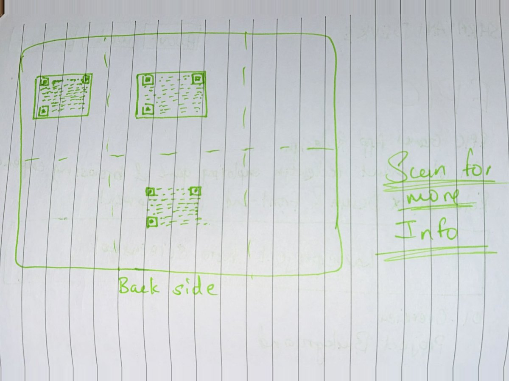
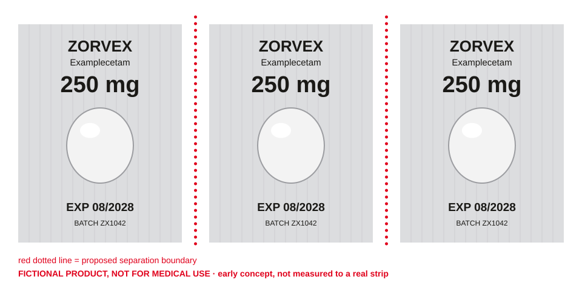
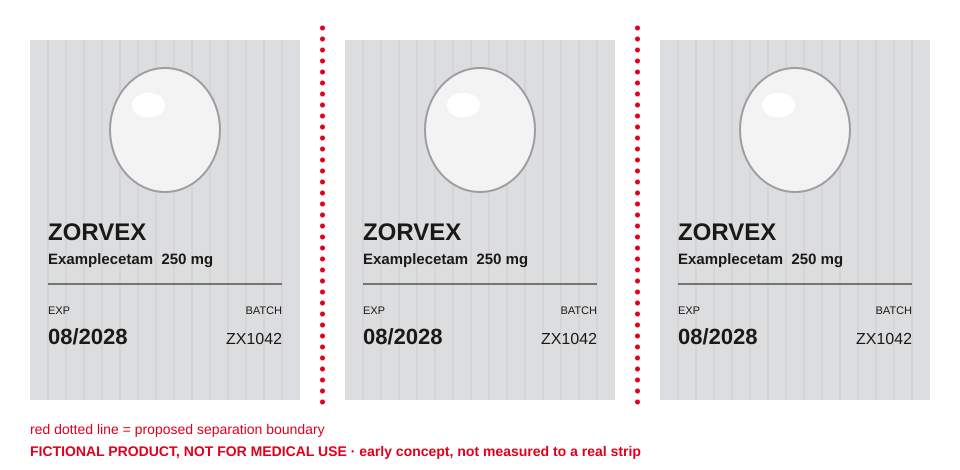
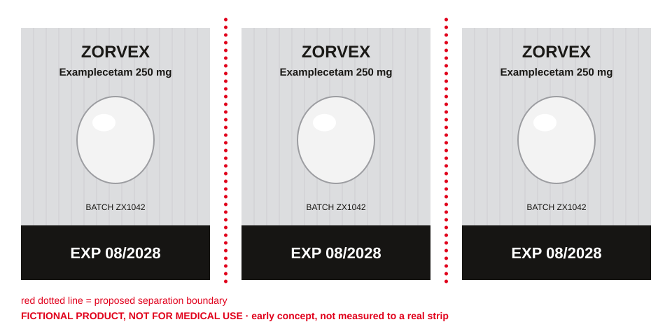
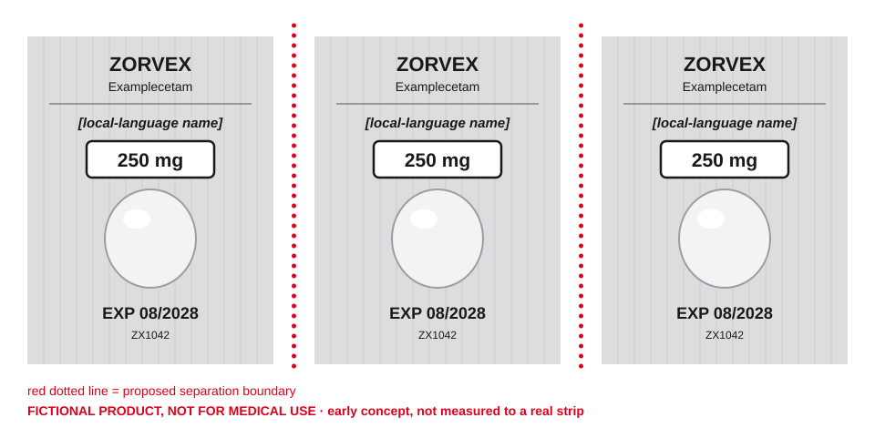
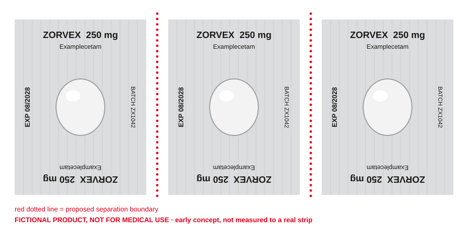
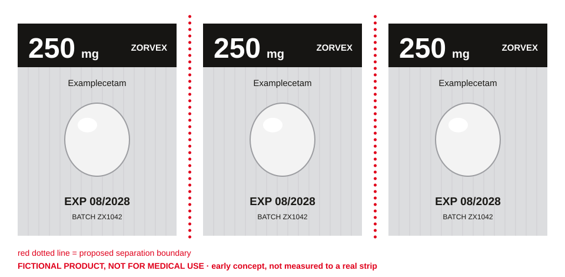

Which one is which?
The tablets stayed. Their names didn't.
An information-design exploration of how medicine strips stay readable after separation.
Proposal and exploration · Not a finished or tested medical product
At a glance
How can a medicine strip keep its identifying information readable when it is separated into smaller pieces?
I’m an HCI student, and my grandparents take several medicines. I’ve watched them get confused about which one to take, and they often ask me for the name. When I cut my own strips while packing for the US, I lost the names too.
Medicine strips often get cut into smaller pieces. When that happens, the name and other details can end up on a piece you no longer have. This project looks at how a layout could keep the essentials on every piece, without changing how the blister itself works.
Goals
- Keep the medicine name and strength identifiable on every separated unit.
- Make the expiry date quick to find, and keep it apart from other codes.
- Explore a second language without crowding a small unit.
What this project isn’t
- A tested or validated medical product
- A claim about safety, regulatory compliance or manufacturing readiness
- A redesign of how blisters seal, protect or open
August–November 2026
How the project unfolded
The challenge
I’m an HCI student, and my grandparents take several medicines. I’ve watched them get confused about which one to take, and they often ask me for the name.
Then it happened to me. Before moving to the US, my mom, who is a doctor, gave me medicines for different situations. While packing, I cut some of the strips into smaller pieces.
Later I found two pieces from similar-colored strips. Both were from the right side of their original strips, and neither had its medicine name left. I couldn’t tell which was which, and I didn’t know what to do next.
I still had the tablets, but I had lost the information I needed to identify them.
Below are the two pieces. As you scroll, the photo dims and one area at a time comes back into view. The red dotted line marks where the strip was separated; the thin red outline marks what we’re looking at. You can also use the numbered buttons, or turn on “Show all layers.”
What already exists
Repeating information across a strip isn’t a new idea. Some foils print the name in a repeating pattern, and some unit-dose packs label every single cell (see the note on existing guidance).
What I wanted to understand is what happens when a strip is cut by hand, where the cut doesn’t follow the print, and what a layout could do so that each piece still says what it is.
What I found
How I studied it
I wanted to hear how people actually handle strips before designing anything.
Method
Semi-structured interviews, 30 to 60 minutes each: a guided conversation built on a short list of open-ended questions, with room for spontaneous follow-ups.
Participants and recruitment
15 participants, recruited through a hospital in India where my mother works. 5 were patients, and 10 were caregivers and helpers who support patients.
Limits of the sample. Everyone was connected to one hospital, so they may be more used to handling medicines than the general public. The findings describe patterns in this group only.
Interview guide (17 questions in 8 areas)
Medicine management
- Can you tell me a little about how you usually manage medicines at home?
- How do you usually keep track of the medicines you have?
Finding the expiry date
- When you pick up a medicine strip, what do you usually look at first?
- How do you check whether a medicine has expired? Have you ever had trouble finding the expiry date?
Identifying medicines
- How do you usually recognize a medicine when you need to take it?
- Have you ever confused two medicines or had trouble telling them apart?
Reading the packaging
- How easy or difficult is it to read the text on medicine strips?
- Does the lighting or the shiny packaging ever make it difficult to read?
Language and understanding
- Is the information on medicine packaging easy for you to understand?
- Would you prefer the information in another language?
Information needs
- What do you usually want to know about a medicine apart from its name?
- Is there anything you find yourself looking up because it's not clear on the packaging?
- Do you feel the packaging has enough information, or is there too much on it?
Opening and handling
- Do you find medicine strips easy to open?
- Have you ever struggled to get a tablet out or accidentally dropped it while removing it?
Closing questions
- If you could change one thing about medicine packaging, what would it be?
- Is there anything about using or keeping medicines at home that we haven't talked about but you think is important?
Follow-up questions varied by participant.
What came up
This is a light summary, not a full analysis. Each card shows one theme. The count is how many participants were quoted on that theme. It doesn’t mean that many people struggled with it.
-
Expiry visibility
6 of the participants quoted here
Expiry dates may be present but are not always easy to identify quickly.
“The date is often printed near a lot of other numbers, so I have to look closely.”
P2 -
Identifying the medicine
5 of the participants quoted here
Brand recognition alone may not be enough to tell medicines apart.
“I look at the brand name first because it’s usually the biggest thing printed.”
P8 -
Readability
5 of the participants quoted here
Foil reflection, text size, and contrast affect legibility.
“The printing is small and the background is shiny. Both make it difficult.”
P5 -
Language
5 of the participants quoted here
Familiar language and terminology affect understanding.
“I would prefer the important information in a language I’m more comfortable with.”
P4 -
Additional information
5 of the participants quoted here
People want more information, but space is limited.
“Warnings are important, but I don’t want too much information on a small strip.”
P10 -
Opening and handling
5 of the participants quoted here
Opening blister packs and controlling the tablet can be difficult.
“I have to find the right spot to push. Sometimes the foil doesn’t tear properly.”
P11
Not everyone agreed. One participant said opening is manageable most of the time, though it could be easier for older people.
Scope decisions
Included
- Clear medicine name and strength
- Prominent expiry date
- Improved contrast and readability
- Consistent information placement
- Exploration of bilingual labeling
- Limited exploration of a pressable form
Excluded or future work
- Dosage schedules and reminders
- Before/after-food instructions
- Detailed warnings and indications
- Purpose symbols
- Engineering changes to blister opening mechanisms
What I considered
Set aside, not tested
Each of these moved the information somewhere other than the unit itself. This is design reasoning only. None of them were tested.
-

Sketch of the wing idea, front side. Idea 1 · Set aside, not tested
Wing
Flat tabs attached to the edges of the strip, like the small paper flag on a chocolate wrapper but much larger. One tab carries the name, strength and expiry.
Why I set it aside: It adds size beyond the strip's footprint. A tab can fold, tear, or get cut off when the strip is separated, and it changes how the pack fits in cartons and pockets.
-

Sketch of the separate-label idea, back side. Idea 2 · Set aside, not tested
Separate label
A small label stuck onto the back of each section of the strip, carrying the name, strength and expiry.
Why I set it aside: It is an extra piece that can fall off or end up on the wrong section. It adds a step, and it relies on adhesives that haven't been validated for medicine packaging.
-

Sketch of the scan-for-information idea, back side. Idea 3 · Set aside, not tested
Scan for information
A square code printed on the back of the strip that links to details about the medicine.
Why I set it aside: It needs a phone, a camera, and often internet access, and scanning gets harder on reflective foil. It doesn't help someone who needs to check a strip quickly.
I wanted essential information to stay on the unit itself.
What I’m proposing
Proposed concept
The proposal: each unit carries its own name, strength and expiry, laid out so it still reads after the strip is cut. Below are six ways that could look.
Read this first. These are early concept visualizations, not measured to a real strip. ZORVEX and Examplecetam are fictional, and the local-language wording is a placeholder that hasn’t been reviewed. None of these layouts is better than another yet; that’s what the prototype testing is for. FICTIONAL PRODUCT, NOT FOR MEDICAL USE.
Layout A · Stacked identity

Layout B · Cavity-first, split expiry/batch

Layout C · Dark expiry band

Layout D · Bilingual split, boxed strength

Layout E · Mirrored identity

Layout F · Strength-first dark header

| Requirement | Proposed response |
|---|---|
| Expiry | Consistent location, an explicit label, and separated from batch and manufacturing information. |
| Identification | A clear hierarchy of brand, medicine name and strength, repeated within every unit boundary. |
| Readability | A high-contrast, uncluttered print area printed directly on the foil. (A matte or opaque print area is a proposal only.) |
| Language | A bilingual name, in one language relevant to the participants. |
| Additional information | Excluded for this project: people want more information, but each unit has very little space. |
| Physical accessibility | Limited exploration of a pressable form. Blister structure and opening forces stay unchanged. |
This part isn’t new
Repeating information on individual blister cells is not new. FDA guidance already recommends keeping critical information on each individually labeled unit-dose blister (Safety Considerations for Container Labels and Carton Labeling Design to Minimize Medication Errors, May 2022). That guidance is not proof of compliance in another country.
The contribution here is the layout, readability and tradeoffs explored in this section.
What I made and why
-
Layered annotation board
Shows where each piece of information sits on a real strip, one region at a time, so the reader sees the problem before any solution.
See it in The challenge -
Six layouts
Compare different ways to keep name, strength, expiry, and language inside every separated unit, so the choice comes from testing, not preference.
See the layouts -
Prototypes In progress
Test the strongest layouts at actual size against a baseline copy of the reference layout.
See the testing
Testing the prototypes
Testing planned
Results will appear here once the sessions have run. Until then, this section describes the study design only.
Study design
- 6 participants will take part, plus one pilot session that won’t be counted.
- Three designs will be compared: the original (a paper reproduction of the reference layout with the same fictional information) and two redesigns.
- Neutral design codes will be used with participants. They won’t be told which design is the original and which are redesigns.
- All six presentation orders will be used, so every design appears in every position twice.
- Three parallel content sets of equal difficulty will be paired with order position rather than design, to prevent memory carryover. That makes 9 prints in total (3 designs × 3 sets).
- Every mock-up will be marked NOT FOR MEDICAL USE, with fictional names and dummy dates only; no real medicine.
Four tasks per design
- Identify the medicine and strength.
- Find the expiry date and say whether it is still in date.
- Pick the requested strength from two similar strips.
- Identify two separated single units and match each to its strip.
Limitations
- This is an exploratory study, not a clinical safety validation.
- Paper prototypes can’t reproduce foil reflection, so I make no claims about glare.
- Results describe these prototypes, tasks and participants only.
- Paper can’t establish sealing, protection, opening force, production suitability, or regulatory compliance.
Impact, honestly
Nothing from this project has been adopted, and none of the designs has been tested in real use. What exists so far is research, six layout concepts and paper prototypes.
Next steps
- Finish the prototype sessions and record the raw counts above.
- Revise the strongest layout based on what the sessions show, and document each change with its evidence.
- Not covered by this round: foil-contrast treatments and opening-form alternatives.
Project details
- Role
- Status
- Timeline
- Method
- Participants
- Scope
Have thoughts on this?
I’m looking for feedback on the layouts and the prototype testing, especially from people who handle medicine packaging or pharmacy labeling.
Get in touchIn this case study
-
What came up in 15 interviews
Six themes, one quote each, and the scope decisions that followed.
-
Six layout concepts
Drawn on a fictional product, with a layer-by-layer view of each one.
-
How I’m testing the prototypes
Four tasks, three designs, six participants, and what paper prototypes can’t tell us.